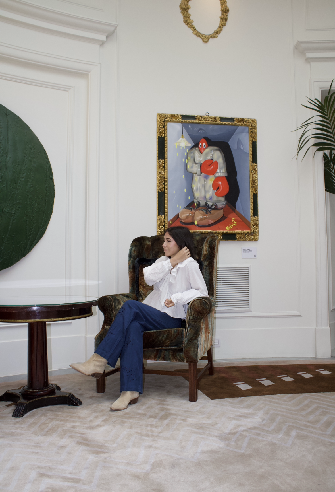
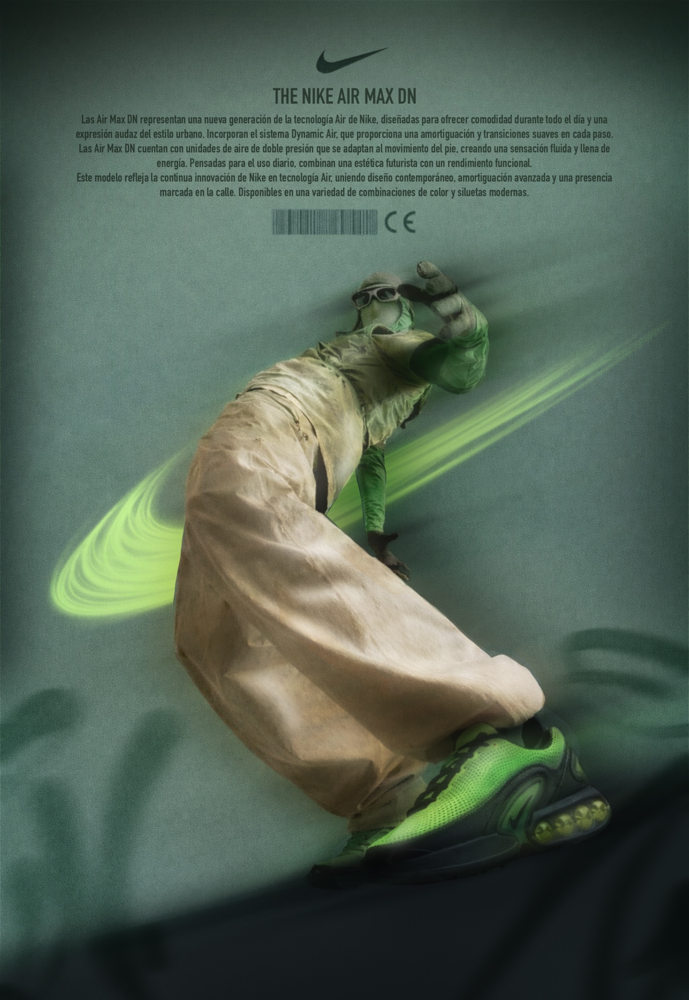
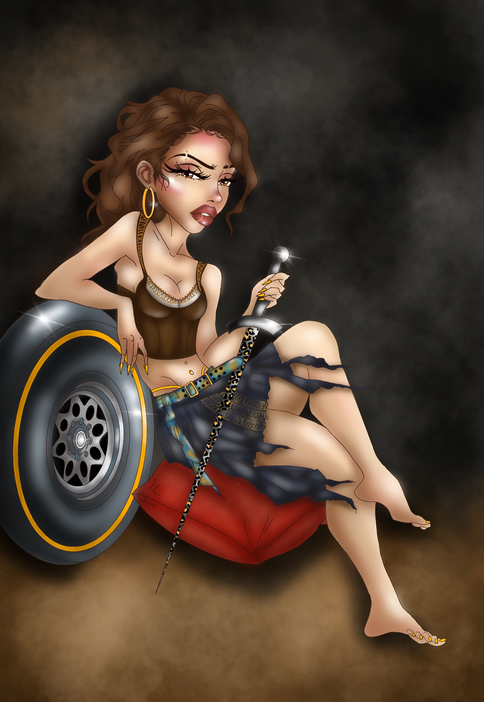
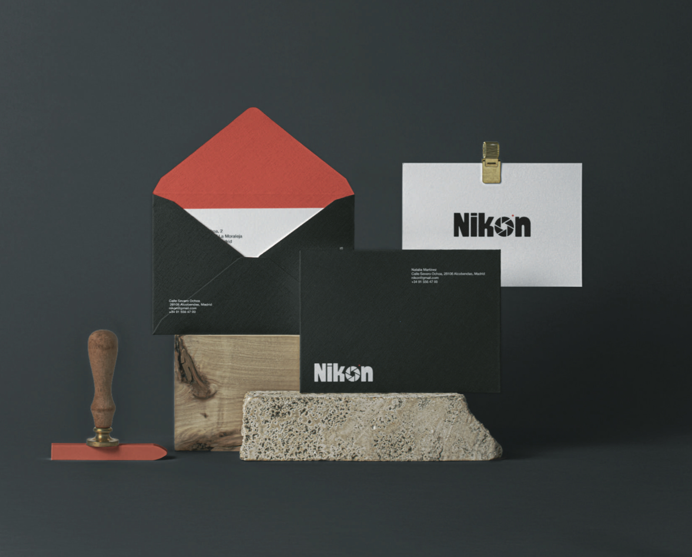
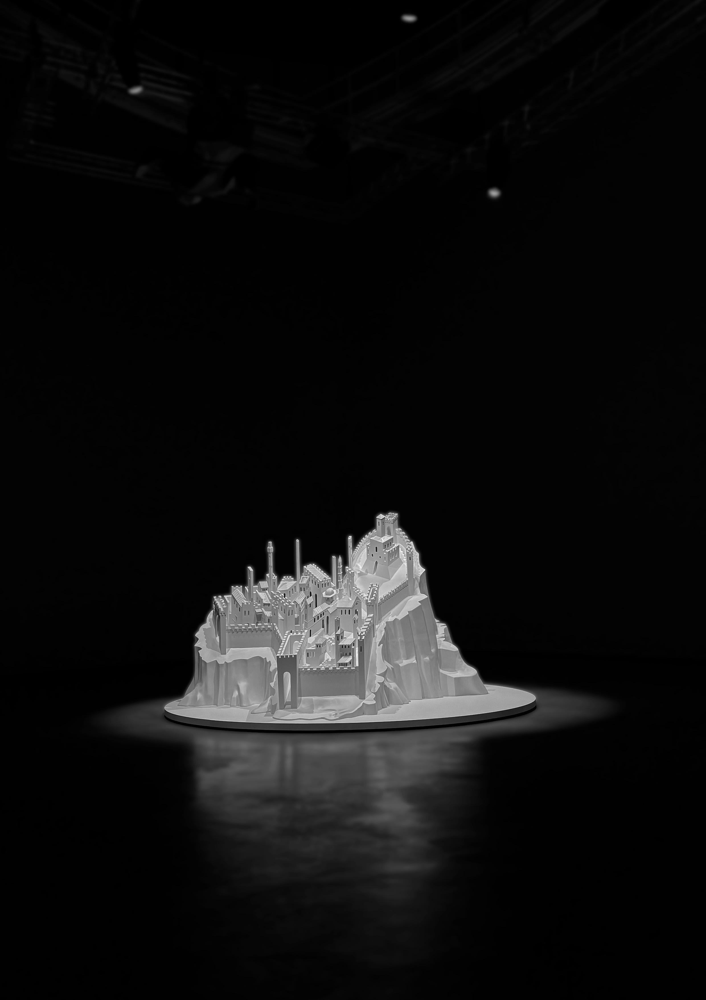
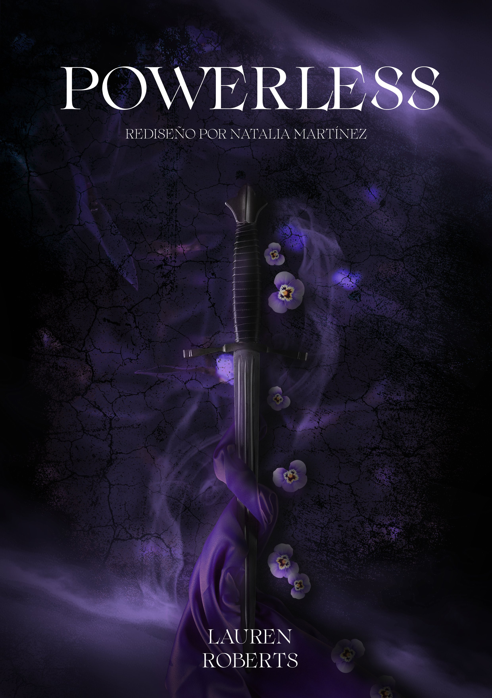
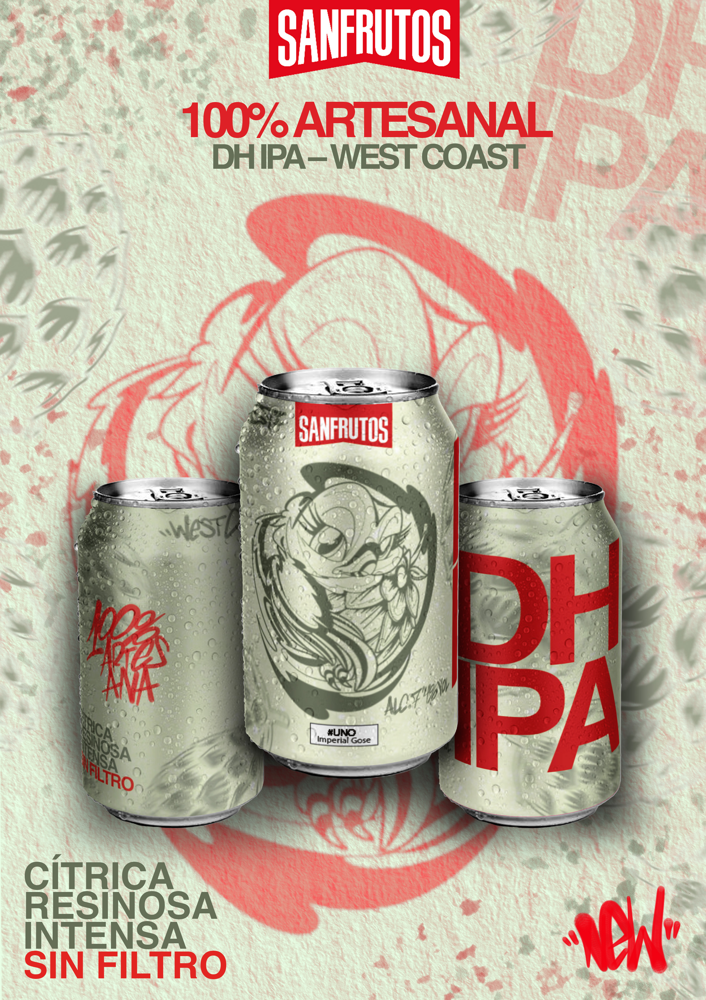

Natalia Martínez
Estudiante de Diseño Gráfico en Madrid.
Interesada en branding, editorial y fotografía.

Mis Proyectos

Campaña Nike

Ilustración Thyssen

Rediseño de marca: Nikon

Fotografía

Diseño Editorial

Sanfrutos
Un poco sobre mí
Empecé en el mundo del diseño casi por casualidad y actualmente estudio en UDIT. Me interesa especialmente el branding, el diseño editorial y la fotografía.
Sigo desarrollando proyectos para mejorar mis habilidades y estilo propio. A través de mis proyectos intento mejorar poco a poco, experimentando con distintos estilos y buscando una línea propia.
Me gusta seguir aprendiendo y enfrentándome a nuevos retos creativos.